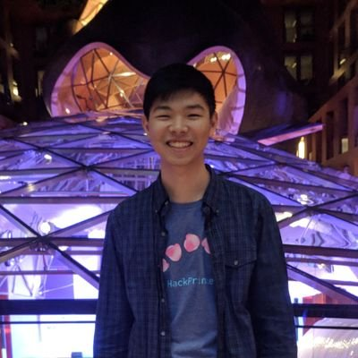

about me
I am a 3B computer science student at Waterloo. 1st engineer at BlockEQ (acquired by Coinsquare for 12M).
I was a Software Engineering Intern on the Google Cloud KMS team, working on secure cryptographic key management for Cloud.
I had the pleasure to serve as the Vice-Chair of the Chinese Christian Fellowship at Waterloo, Winter 2019.
If I'm not in the MC lab or CSC, you can find me out biking the trails and enjoying the fresh air.
interests
I love to build. I love to think critically in unconventional ways. I care about our privacy and security as humans in a technological world.
projects
- I tried to build an encrypted cloud FUSE filesystem in Rust in Summer 2019.
- I am working on building an Android Grin wallet. Link.
- vm, a shell text editor identical to Vim, written in C++. I wrote a blog post about the software design principles I learned while building it.
- I built a C++ (WLP4) compiler in Racket (aka Scheme)
- Halite, a top 3 undergraduate ranked AI bot out of 1500 bots in the Two Sigma Halite AI competition.
- Librio is a python script that rebalances your Binance exchange portfolio according to percentage allocations.
- Poker Chip Counter, an Android app that keeps track of pot and player money. +10000 Downloads. +1500 monthly users. Shutdown now since I'm not maintaining it.
- Rankr, is an Android app that lets you compete in a leaderboard with your friends and co-workers in leagues grouped by organization.
- Once I wrote a script to try and build the best Fantasy Basketball team for my league.
- I love the IndieHackers website, so I wrote a native IndieHackers reader for Android. It got shutdown for copyright issues on the Play store :(
hackathons
I did a lot of hackathons in 1st year,
and a few in 2nd year, less in third year. Hackathons are great for several reasons, including:
free food and swag, travel, meeting smart people, networking with companies.
They are great ways to force yourself to work on projects if you're having an unproductive streak.
- Second place Internal Google Intern Hackathon 2019. My team built a subway navigation device for the blind in New York. Video here.
- HackPrinceton Fall 2018: Best Financial Hack, Top 3 in Blockchain. Microfinancia, microfinancing on the blockchain (using ARK).
- nwHacks 2018 (UBC): The Wolfram Award. Blockchain VR, Bitcoin blockchain represented in space time in VR, demoed with an Oculus Rift we "borrowed" from Best Buy.
- HackPrinceton Spring 2017: Best Internet of Things Hack. Mnemonic, a social memory iOS app with a Raspberry Pi 3 camera necklace.
- HackHarvard 2017: Coindex, Blockstack bounty finalist, received honorable mentioned in Blockstack's results post.
- McHacks 2017 (McGill): SnapChef, uses Clarifai's OCR to figure out what's in your fridge and gives you recipes to cook with your ingredients.
- Terrible Hacks 2016 (cult classic at Waterloo): Alarmbae, definitely my favourite one. Terrible Hacks is a meme hackathon that is purely for entertainment with friends.
- YHack 2016 (Yale): mix, my first hackathon. A beautifully animated timer music app that creates a playlist that lasts for the duration of the timer.
- Also one missed bus at 6:30 am for PennApps Fall 2017 XD